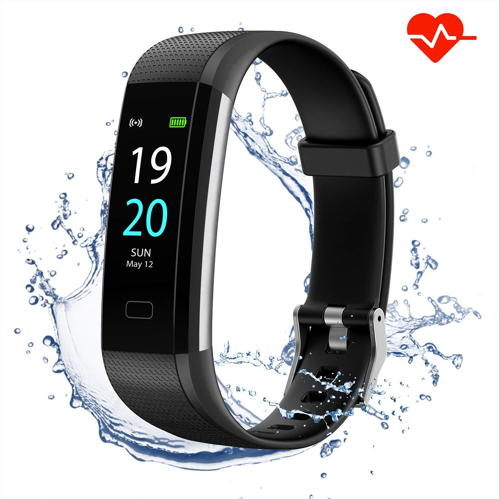

Fitness Tracker
It lets you watch and record your heart rate, daily burned calories and step counts. Dr.Hatano is the one who invented BP.
It lets you watch and record your heart rate, daily burned calories and step counts. Dr.Hatano is the one who invented BP.

Smart Watch
It helps notifies the user of incoming calls, e-mail messages, and notifications from applications of a person. Steve Mann is the one who invented this.
It helps notifies the user of incoming calls, e-mail messages, and notifications from applications of a person. Steve Mann is the one who invented this.

Smart Phones
It keeps users connected through messaging services, email, video calls and social networking apps. Eric A. Johnson is the one who invented this.
It keeps users connected through messaging services, email, video calls and social networking apps. Eric A. Johnson is the one who invented this.
Wi-Fi
It is used to provide wireless broadband Internet access and allows local area networks (LANs) to operate without cables and wiring. Hedy Lamarr is the one who invented this.
It is used to provide wireless broadband Internet access and allows local area networks (LANs) to operate without cables and wiring. Hedy Lamarr is the one who invented this.

Smart Refrigerator
Able to detect the type of items stored in it and keep track of important details such as expiry and usage. LG introduced the first internet-connected fridge.
Able to detect the type of items stored in it and keep track of important details such as expiry and usage. LG introduced the first internet-connected fridge.
CCTV
It is a form of testable explanations and predictions about human movement and actions by a set of algorithms. Walter Bruch is the one who invented this.
It is a form of testable explanations and predictions about human movement and actions by a set of algorithms. Walter Bruch is the one who invented this.